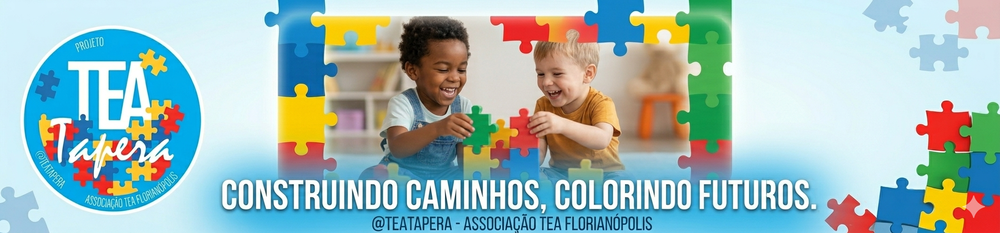

Notícias e Eventos
Últimas atualizações do TEA Tapera
Sobre o Projeto TEA Tapera
O projeto nasceu a partir de um gesto simples, mas profundamente transformador: duas mulheres, sensibilizadas pela realidade de uma mãe de uma criança autista que enfrentava crises de misofonia dentro da igreja, decidiram agir. A partir dessa situação, iniciaram rodas de conversa com outros pais, criando um espaço de acolhimento, escuta e troca de experiências.
Com o tempo, ficou evidente que as famílias precisavam de mais do que apoio emocional — havia uma grande demanda por atendimentos especializados. Foi então que, por meio de doações e do engajamento da comunidade, o projeto começou a oferecer atendimentos diretos às crianças.
Em menos de dois anos de existência, a iniciativa cresceu de forma significativa e hoje se consolidou como um projeto de extensão vinculado à Universidade Federal de Santa Catarina, tornando-se referência no sul da ilha de Florianópolis no atendimento a pessoas com necessidades específicas.
Atualmente, a associação conta com 247 famílias cadastradas, realiza atendimento a mais de 150 crianças e mantém cerca de 100 crianças em fila de espera, o que demonstra tanto a relevância quanto a urgência da ampliação do projeto. Além do público infantil, os atendimentos também se estendem a adolescentes, adultos e, mais recentemente, idosos.
O impacto social é profundo: o projeto promove inclusão, melhora na qualidade de vida, desenvolvimento cognitivo e emocional, além de oferecer suporte às famílias que muitas vezes não têm acesso a esse tipo de atendimento na rede pública ou privada. Embora tenha forte atuação na comunidade local, o alcance vai além — atendendo pessoas de diversos bairros de Florianópolis e também de cidades da Grande Florianópolis.
Mais do que um projeto, trata-se de uma rede de apoio que transforma realidades, fortalece famílias e constrói uma sociedade mais inclusiva e humana.